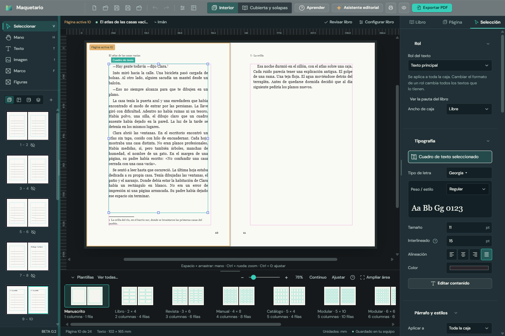
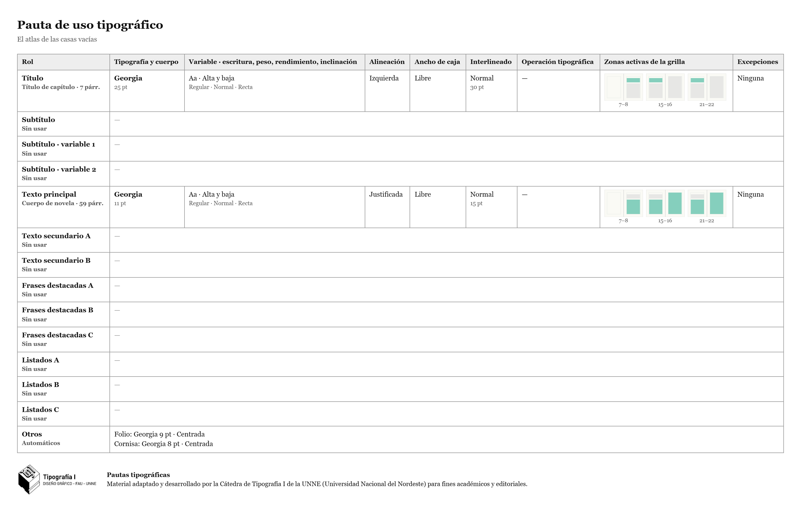

Una aplicación de escritorio para diseñar libros, revistas, diarios, manuales y otros productos editoriales. Qué incluye, qué hay de nuevo y cómo probarla.
Creada por
Sebastián Poberezny
Versión de prueba
BETA 0.2 · Windows 10 y 11 de 64 bits
Instalador
Maquetario BETA 0.2.exe
Fecha
Noviembre de 2026
Qué es Maquetario
Maquetario es una aplicación de escritorio para diseñar libros, revistas, diarios, manuales y otros productos editoriales. La idea es acercar la maquetación a docentes y estudiantes, con herramientas fáciles de encontrar y una interfaz propia, sobria y ordenada, pensada para trabajar muchas horas sobre la página.

El editor en BETA 0.2. Arriba, Interior | Cubierta y solapas y Aprender; en el centro, el libro tal como se imprime, con una nota al pie; a la derecha, el panel de lo que esté elegido.
Lo nuevo en BETA 0.2
Esta versión suma lo que pidió la cátedra de Tipografía I (FAU-UNNE) y conserva todo lo anterior:
Notas al pie y citas: la nota va donde está el cursor (botón o Ctrl+Alt+F), con su número volado en el texto y la nota al pie de la página, numeradas solas.
Roles de texto: Título, Subtítulo, Texto principal, Textos secundarios, Frases destacadas, Listados y Otros. Cambiar un rol cambia todo el libro.
Pauta de uso tipográfico automática: la tabla de la cátedra se arma sola mientras diseñás, se edita y se descarga en PDF o imagen, con la leyenda y el logo de la cátedra.
Partes del libro para tildar: de la portadilla al colofón, cada una se agrega en su lugar.
Cubierta y solapas y Aprender (tutorial, glosario y bibliografía), siempre a la vista en la barra principal.

La pauta de uso tipográfico descargada, lista para entregar.
Qué incluye
Lo marcado nuevo se sumó en BETA 0.2.
Documento y grillas
Formatos predeterminados (A3, A4, A5, A6, Carta, Oficio, 17 × 24, 20 × 20 y otros) y medidas personalizadas.
Márgenes, filas, columnas y medianiles independientes.
Grillas ajustables a los márgenes o al borde de la página, guías e imantado para ubicar los elementos con precisión.
Guías que se sacan de las reglas, se mueven y se quitan con el mouse.
Plantillas de distintas estructuras editoriales y armado de un libro desde un manuscrito.
nuevo Partes del libro para tildar: portadilla, portada, créditos, dedicatoria, epígrafe, índice, prólogo, introducción, cuerpo, apéndice, bibliografía, agradecimientos y colofón.
Texto y tipografía
Acceso a las fuentes instaladas y a carpetas de fuentes, con vista previa de su diseño.
Familias, pesos, estilos y ejes de fuentes variables, y panel de glifos.
Alineación, sangrías, espaciados, separación silábica y estilos de párrafo.
nuevo Roles de texto con los nombres de la planilla de la cátedra, y el ancho de caja del rol en columnas.
nuevo Escritura: alta y baja, todo mayúsculas o versalitas.
nuevo Notas al pie y citas.
Objetos y composición
Imágenes, marcos y figuras con relleno, contorno y transparencia.
Controles de posición, tamaño, alineación y distribución, y capas para ordenar, ocultar y bloquear.
Automatización editorial
Foliado automático, cornisas y titulillos, con opciones para páginas pares e impares y lectura lateral.
Índice automático a partir de los títulos y secciones.
nuevo Pauta de uso tipográfico que se arma sola, editable y descargable en PDF, imagen o planilla.
Cubierta dentro del mismo proyecto
Diseño de tapa, contratapa, lomo y solapas, con sus medidas, sangrado y zona de seguridad.
Textos e imágenes en cada zona y exportación de la cubierta separada del interior.
nuevo Interior | Cubierta y solapas en la barra principal.
Revisión, exportación e impresión
Vista previa, exportación a PDF en orden de lectura o como cuadernillo, e impresión.
PDF con cajas de corte y de sangrado, y "PDF para imprenta (PDF/X-4)".
Paquete para imprenta y "Revisar libro".
Herramientas para aprender
Tutorial guiado, glosario de diseño editorial y una novela de ejemplo.
Espacios de trabajo: Inicial (lo esencial, para empezar en clase), Predeterminado y Personalizado.
nuevo Aprender, siempre a la vista, con una bibliografía de tipografía y diseño editorial.
También tiene guardado y "Guardar como" en formato .mqt, proyectos recientes, deshacer y rehacer, zoom, desplazamiento con la mano y atajos de teclado. La interfaz está disponible en español, inglés y portugués.
Instalación
Abrí Maquetario BETA 0.2.exe. Se instala con un clic, sólo para tu usuario, sin pedir permisos de administrador. Si tenías la BETA 0.1, la reemplaza. Para desinstalarlo, usá "Agregar o quitar programas" de Windows.
Todavía no tiene firma digital, así que Windows puede mostrar un aviso de editor desconocido. Para seguir, tocá "Más información" y después "Ejecutar de todas formas".
Al abrir, la bienvenida dice "BETA 0.2". Los proyectos hechos con la 3.20 se abren igual; si alguno no, avisanos.
Qué probar
Empezar.Crear un libro nuevo, armar uno desde un manuscrito o abrir la novela de ejemplo.
Notas al pie.Escribiendo en una caja, tocar "Insertar nota al pie" o Ctrl+Alt+F y escribir la nota.
Roles.Darle un rol a cada texto (Selección → Rol) y cambiar el formato del rol.
La pauta.Abrirla desde Estructura → Pauta tipográfica y descargarla en PDF.
Partes del libro.Tildar y destildar partes en la vista Estructura.
La cubierta.Pasar a Cubierta y solapas: medidas, lomo, solapas e imágenes.
Revisar y sacar."Revisar libro", PDF común y para imprenta, impresión y paquete.
En clase.El espacio Inicial, el tutorial y Aprender.
Tu opinión
Me sirve mucho saber qué resulta claro, qué cuesta encontrar y qué mejorarías. Algunas preguntas para guiarte:
¿Encontrás cada cosa donde la buscarías? ¿Algo que pondrías en otro lugar?
¿Las notas al pie y la pauta resuelven lo que necesitás para tus entregas?
¿Los nombres y textos se entienden, con el vocabulario del oficio?
¿Los PDF salen como esperás? ¿Una imprenta los aceptó sin pedir cambios?
 Maquetario
Maquetario